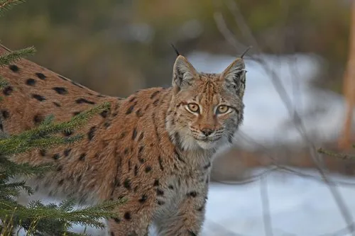

哺乳动物 · 动物界
猞猁 Lynx lynx

北半球针叶林中的中型猫科动物，耳尖簇毛与宽大脚掌是标志，短尾、善伏击，能在深雪中追击猎物。
- 分类
- 门脊索动物门纲哺乳纲目食肉目科猫科属猞猁属
- 栖息环境
- 针叶林、针阔混交林与苔原森林，偏好岩石密布、灌木丛生的山地
- 地理分布
- 亚欧大陆北部，中国东北、华北、西北及西南山区有分布
- 保护级别
- IUCN 无危（LC）；中国国家二级保护动物
物种志
猞猁体长 0.8–1.3 米，尾仅 10–25 cm，体重 12–30 kg，是猞猁属中体型最大者。它四肢粗长、脚掌宽大，像天然的雪地靴；耳尖生有黑色簇毛，脸颊两侧垂下长毛，被毛为灰黄至红棕色，散布暗色斑点，尾短而末端发黑。
猞猁栖息于北半球亚欧大陆的针叶林、混交林和苔原森林，尤其喜欢岩石多、灌木密的山地。它主食狍、麝、雪兔等，常埋伏于兽径旁或树上，短距离突袭，冬季也会循脚印长途追踪。它多在黄昏和夜间单独活动，领地范围可达数百平方千米，用尿液、粪便和抓痕标记。每年 2–4 月发情，妊娠期约 70 天，每胎 2–4 仔。在中国，猞猁分布于东北、华北和西南山区，野生种群稀少。
形态与习性
- 食性狍、麝、雪兔等，也捕食鸟类与小型兽类
- 体长0.8–1.3 m，尾长仅 10–25 cm
- 体重12–30 kg
- 寿命野外约 10–15 年
- 繁殖2–4 月发情，妊娠期约 70 天，每胎 2–4 仔
- 耐寒适应宽大脚掌承压面积大，便于在深雪中行走
- 活动节律黄昏和夜间独居活动
趣味知识
- 耳尖的黑色簇毛像天线，能增强收集声音的能力。
- 宽大脚掌像雪地靴，让它在深雪中不易下陷。
- 猞猁的尾巴极短，仅 10–25 cm，是猞猁属的显著特征。
- 它常在树杈或岩缝中埋伏，等猎物靠近后短距离突袭。